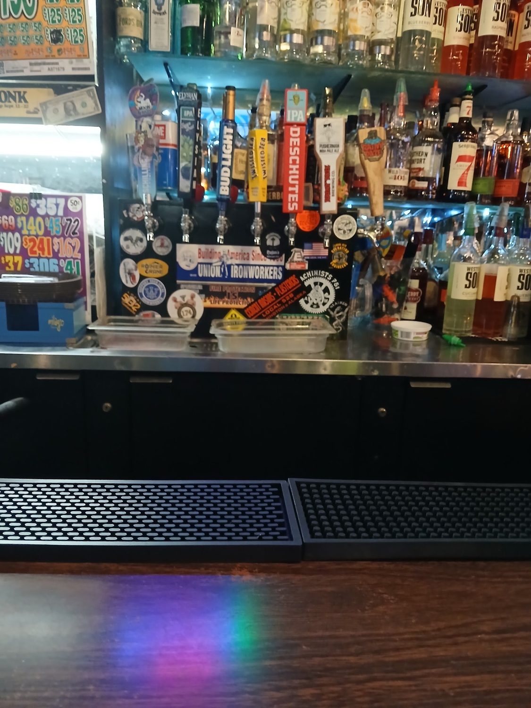

Who's in here
Old school meets new school
“Great dive bar, people mingling… a local favorite. Old school meets new school and most everyone is respectful & fun.” — a Google review, August 2026.
Scotty's has been on this block a long time. The oval sign bolted to the brick outside says Serving Puyallup since and then a year the plants have grown over — but the building is 1890s downtown brick, and the bar has the look of a place that stopped redecorating on purpose.
It's the kind of room where the bartender is the reason people come back. Regulars in the listings name Mel again and again — friendly, cooks, and half of them call her Mama. Micro pints run about six-fifty. There's no air conditioning, and nobody seems to mind.
Once a month the Cruise Puyallup car show runs right down Meridian past the front door, and the sidewalk chairs out front turn into the best seats on the street.